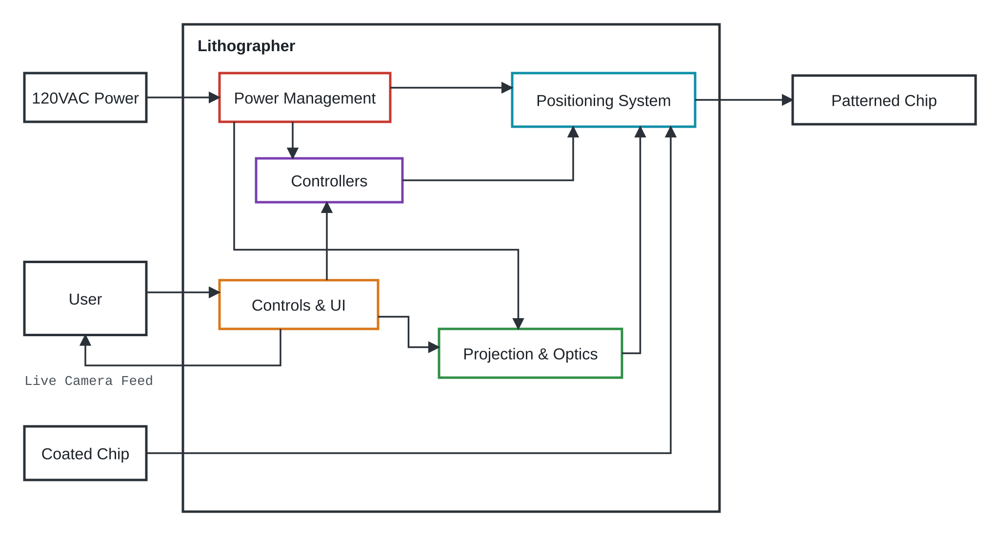
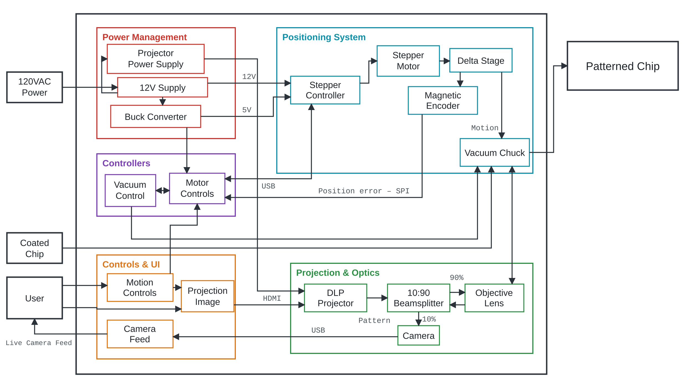

Maskless lithography system
Senior capstone, fall 2026 to now. Team lead of a four-person team at Penn State Harrisburg.
We are building a machine that prints the patterns for semiconductor devices onto a silicon chip, using a video projector in place of a photomask.
- 2 µm
- smallest feature the reference design has printed
- 5 µm
- transistor gate length we are aiming to make
- 410 nm
- near-UV light that exposes the photoresist
- About $3,200
- parts cost when I priced the full bill of materials
Why build one
Lithography is the step that sets how small a transistor can be. A chip is coated with a light-sensitive film called photoresist, an image of the circuit is projected onto it, and the exposed resist washes away to leave the pattern. A simple chip repeats this 10 to 30 times.
The machines that do it in industry cost between $5 million and $400 million, fill a room, and need a team of specialists to run. That puts hands-on chip fabrication out of reach for most universities. Our goal is a tool that costs a few thousand dollars and can make transistors large enough to inspect and small enough to teach with.
Inspired by Carnegie Mellon's Hacker Fab
This project starts from someone else's good idea. The Hacker Fab at Carnegie Mellon University designed an open-source maskless lithography stepper, built it from about $3,000 of off-the-shelf parts, and used it to print features as small as 2 µm and to make working transistors. They published the design in a paper, along with build documentation and the control software.
Our plan is to replicate their stepper at Penn State Harrisburg and improve it where we can. Their core idea is the one we are keeping: a DLP projector acts as a mask that can be redrawn in software, so changing the circuit means changing an image file, not ordering a new glass mask.
In October 2026 I visited the Hacker Fab lab in person, and the CMU team has stayed in touch by email since. The visit changed how we think about the build:
- No cleanroom and no optical table. Their tool sits in an ordinary lab room. An enclosure mostly blocks drafts, which supports our plan to use a small clean box.
- One rigid frame matters most. The stage, projector, and camera have to sit on a single stiff structure so that vibration moves them together.
- Position feedback beats counting steps. Their newer stage reads its position with magnetic encoders, which should align layers better than an open-loop stage.
- Skip the vacuum spin coater. Theirs pulled resist into the vacuum line and gummed it up, so they now tape the chip to a spinning platform.
They also suggested where a second team could add something new: trying other photoresists and UV wavelengths, finding a replacement for the projector, which is often out of stock, and finishing the software that aligns multiple layers.
How it works
The projector's blue LED is swapped for a 410 nm near-UV LED. The 1920 by 1080 image leaves the projector, passes through a beamsplitter, and is shrunk by a 10x microscope objective onto the chip. Each exposure covers a field about 1 mm wide and takes around 8 seconds in the reference design. To pattern a larger area, the stage steps the chip and exposes the next field beside the first.
A camera looks back through the same objective, so the operator sees exactly what the projector sees. The pattern can be shown in red light first. Red does not expose the resist, so it is safe to focus and line things up before switching to UV.
The lens sets a hard limit on feature size. With the Rayleigh criterion:
R = 0.61 × λ / NA = 0.61 × 0.410 µm / 0.25 ≈ 1.0 µm
So about 1 µm is the theoretical best for this lens and wavelength, and the 2 µm that CMU reached in practice is close to it. The same numbers give a depth of focus of only about ±3.3 µm, which is why focusing has to be automated.
System design
I wrote most of our functional decomposition, which breaks the machine into five subsystems. It takes in wall power, commands from the user, and a resist-coated chip, and it returns a patterned chip and a live camera view.

- Power management turns 120 VAC wall power into 12 V, 5 V, and the projector's supply.
- Controls and UI is the software on the PC. It takes stage commands, sends the pattern to the projector over HDMI, and shows the camera feed.
- Controllers drive the stage motors and the vacuum pump, and read position error from the encoders over SPI.
- Projection and optics is the projector, the beamsplitter, the objective lens, and the camera.
- Positioning system is three stepper motors moving a delta stage, with magnetic encoders for feedback and a vacuum chuck that holds the chip flat.
The software also has to do two jobs a person cannot do reliably by hand. Autofocus steps the stage up and down, coarse then fine, and keeps the height where the camera image is sharpest. Auto-alignment uses a neural network to find the alignment marks in the corners of the chip, then moves the stage to line them up with the next pattern.

Decisions so far
- A delta stage with encoder feedback. I priced both of CMU's stage designs and the parts cost about the same, roughly $320 against $350. The newer delta stage takes more labor to build, but it has a theoretical step of about 79 nm and closed-loop feedback, so that is the one in our design.
- A clean box, not a cleanroom. A full cleanroom is out of reach on cost and space, and the CMU visit showed it is not needed.
- No hydrofluoric acid, in any form. After collecting the safety data for every chemical in CMU's process and meeting with our advisors, we ruled out HF completely. That takes etching out of scope and is the largest place our process departs from theirs.
- Standards first. I wrote the standards section of our proposal. Chemicals and UV exposure are the two most serious hazards, so they get the strictest rules, including an emergency stop that cuts both the UV light and stage motion.
My role
- Lead the four-person team and work with our three advisors.
- Manage the budget and track tasks in Jira.
- Did the literature review, covering both versions of the CMU paper and Chris Mack's Fundamental Principles of Optical Lithography.
- Priced every line of the bill of materials and wrote the funding request for the stage parts.
- Wrote the functional decomposition and the safety standards section.
Where it stands
This semester is research and design, and the build comes next. The main open question is the projector: the model the design is built around is backordered, so we are weighing three alternatives, including the light engine from a resin 3D printer. The first milestone for the hardware is a clean, sharp pattern in photoresist. After that comes stitching fields together to cover larger areas.
Credit and sources
- CMU Hacker Fab, "A low-cost, open-source maskless photolithography stepper," arXiv:2510.15082.
- Hacker Fab documentation and the stepper software.
- The open-source micromanipulator that the delta stage is based on.
- C. Mack, Fundamental Principles of Optical Lithography, Wiley, 2007.